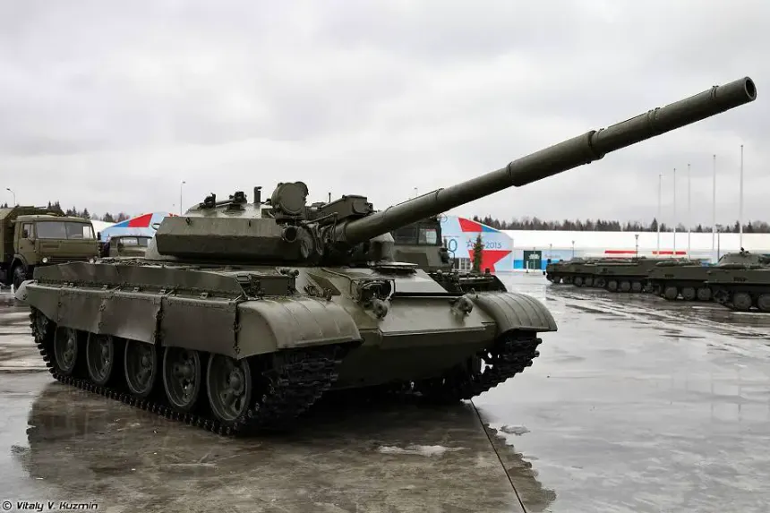

Union of Soviet Socialist Republics
BackHistory
The Soviet Union stands as the undisputed leader of the socialist world. After crushing the Hungarian Uprising in 1956, the USSR projects its power through the Warsaw Pact while racing ahead in the Space Age with Sputnik and Gagarin. But beneath the surface, cracks appear—Khrushchev's reforms, the Sino-Soviet Split, and growing dissent in Eastern Europe test Moscow's control.

Defense Units
2K12 Kub (SA-6)
Mobile SAM system (24 km range, triple launcher)
ZSU-23-4 Shilka
4× 23mm radar-guided SPAAG
MiG-21PFM
Interceptor (R-60 IR missiles, Mach 2.1)
Attack Units
T-62 MBT
Main battle tank (115mm smoothbore gun, IR night vision)

Su-7B Fitter
Ground attack aircraft (FAB-500 bombs, Mach 1.6)
Scud-B
Short-range ballistic missile (300 km, conventional/nuclear)